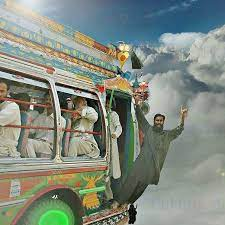

The most recent places i visit:
Despite poor infrastructure, lack of health and education facilities,
thousands of visitors toured to the remote Tirah valley during
recent Eidul Azha holidays to enjoy pleasant weather,
tribal hospitality, traditional foods and sights and sounds of the region
once infested with militants.
 The Naran-Kaghan Valley of KPK
The Naran-Kaghan Valley of KPK
is renowned for its history dated back to British Colonial period.
Since the stone age to the current era,
the region had inhabited several casts like Swati,
Awan, Kashmiri, Durai, Mughal, and Quarish.
The region is rich in terms of historical
buildings and monuments.
Naran is a town and popular tourist destination in upper
Kaghan Valley in the Mansehra District of the Khyber Pakhtunkhwa
province of Pakistan.
It is located 119 kilometers from Mansehra city at the altitude of 2,409
 The Badaber fortress, 24 km south of Peshawar,
was a military training centre of the
Afghan Mujahideen who opposed Soviet presence in Afghanistan.
The Mujahideen were trained by military instructors from the United States (Operation Cyclone) and Pakistan.
Last weekend I visited Bara
Tehsil of Khyber Agency
for the second time. My first visit was in 2008,
when this was the hub of businesses but
now their were only wrecks.
Last time when we were crossing Bara Market took
almost an hour but this time there were no traffic
and was just like wilderness.
Those Markets having 2000 shops of
different imported and local products were destroyed.